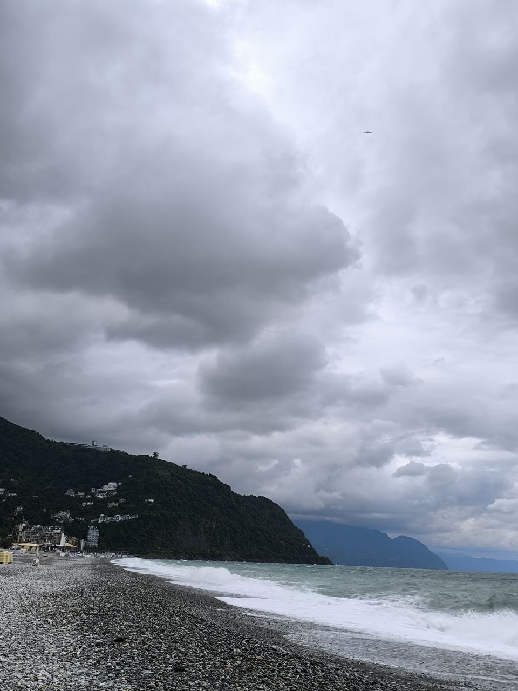
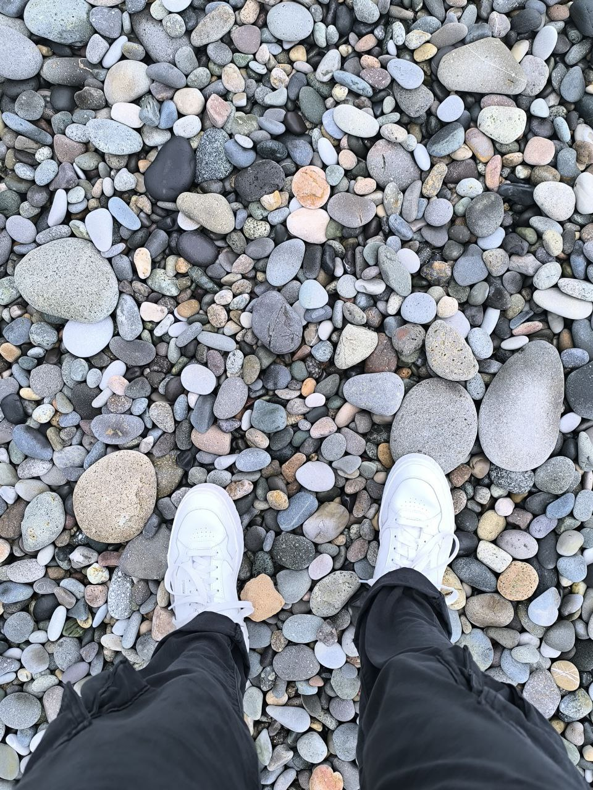
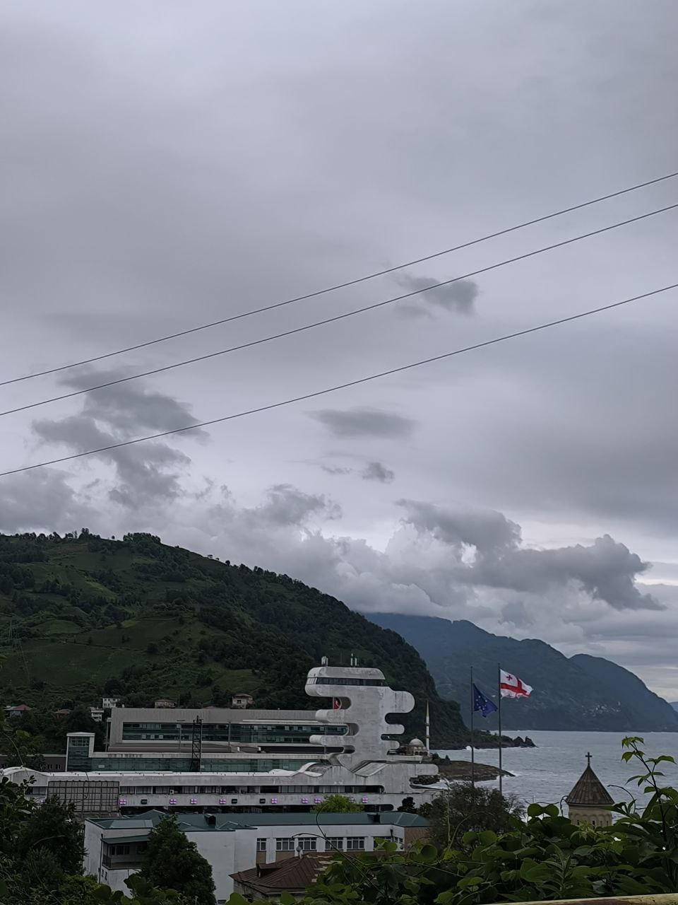
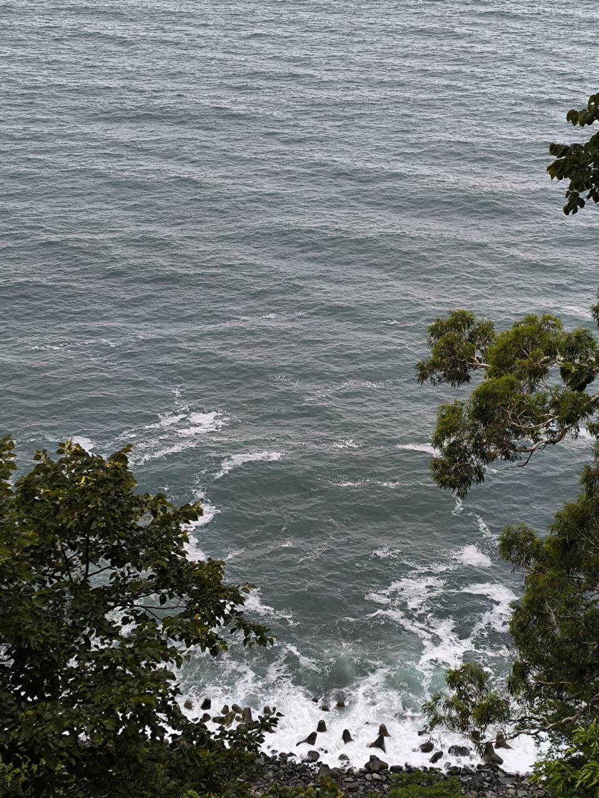
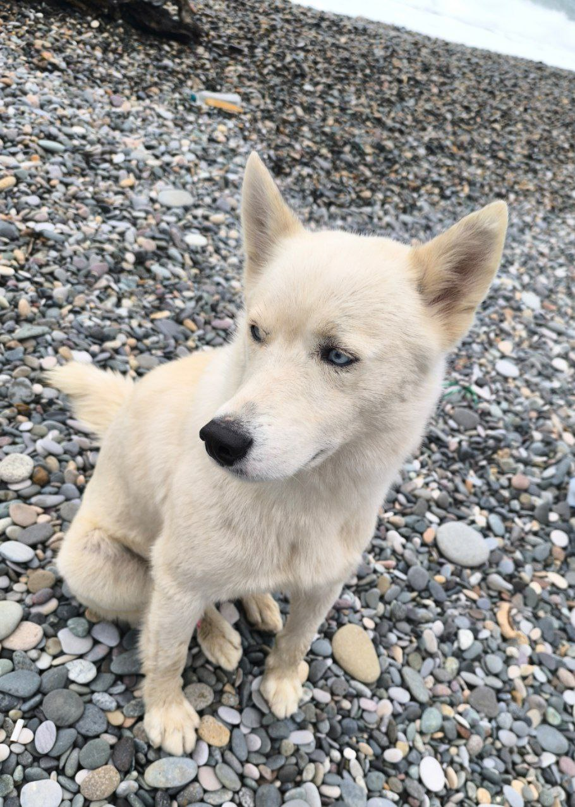

Day 3
Gonio
The weather still wasn't good, but we took a 30-minute drive to a small town Gonio.
 
First of all we explored the beach.
 
In the afternoon we came to the Georgian-Turkish border and then went hiking.

On our way back we met this buddy!
previous day
to next day